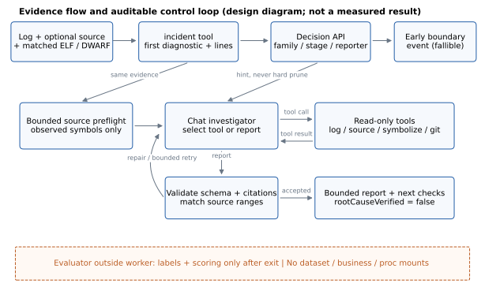
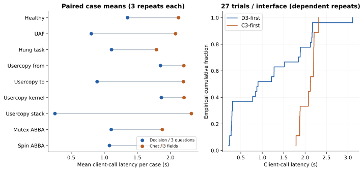
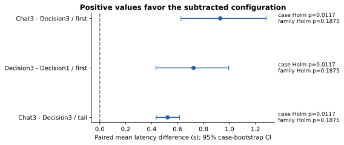
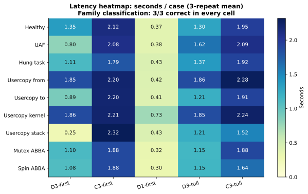
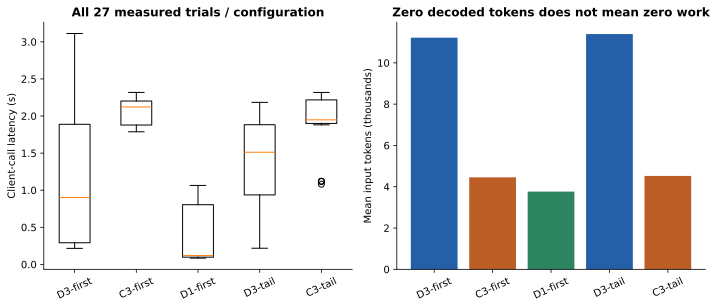
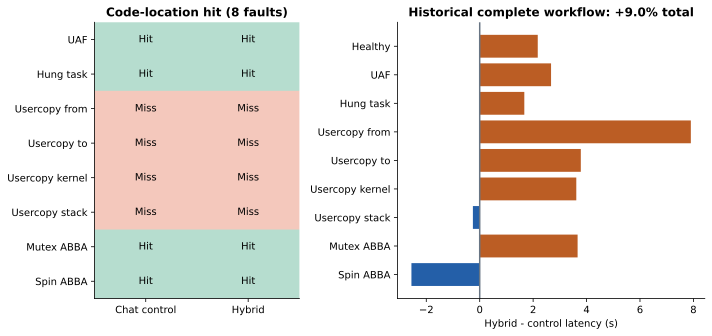
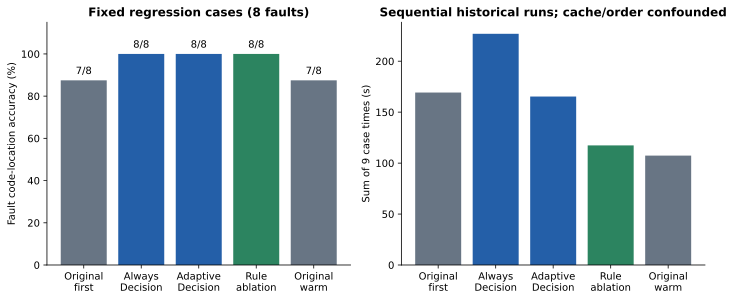
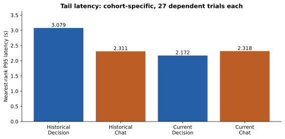
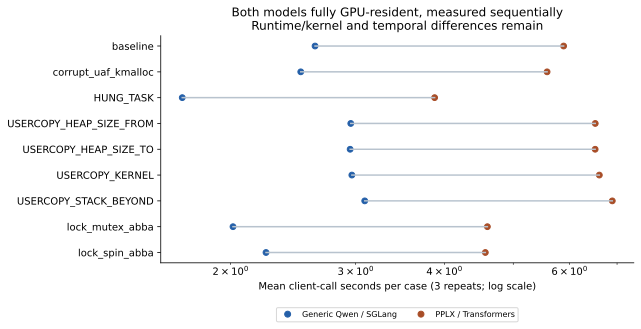

AI4Loc-Decision：以类型化决策接口提前定界的证据驱动内核故障定位
AI4Loc-Decision：以类型化决策接口提前定界的证据驱动内核故障定位
系统设计、配对实验、消融分析与收益边界
Typed Decisions for Early Boundary Identification in Evidence-Driven Kernel Fault Localization
实证技术研究报告 · 2026-10-12 修订 · 原主实验代码基线 7e49c6b；专用模型补充基线521b29c
摘要
内核故障定位需要区分“哪个检测器首先报错”与“哪段代码导致故障”。生成式 Agent 能开展开放式源码调查，但有限分类同样依赖文本解码，且分类置信度容易被误读为因果证明。本文设计一个证据驱动的分层 Agent：由实际日志工具提取第一现场，Jev-like 类型化 Decision 接口回答故障家族、执行阶段和报告组件，Chat 在不被分类硬约束的条件下继续调用只读工具，并通过源码引用检查交付候选位置。
基于服务器可追溯数据，本文复核 54 次历史有限分类调用、18 次隔离完整定位与 63 次历史消融运行，并新增 135 次配对随机接口消融。新增三问题 Decision 的平均客户端调用耗时为 1.145 秒，Chat 为 2.075 秒，相对降低 44.8%，配对差值 95% 案例 bootstrap 区间为 [0.626, 1.284] 秒；三个预先指定时延对比的 Holm 校正 p 值均为 0.0117。两接口故障家族均为 27/27 正确，但仅包含 9 个唯一案例、5 个机制分组，家族级敏感性检验不显著。
完整定位对照在 8 个故障上的代码位置命中均为 4/8，混合系统请求数 25→34、累计耗时 252.946→275.619 秒。历史规则消融同样达到 8/8 回归命中，说明现有证据不能把定位改善归因于 Decision。研究支持将类型化接口用于提前返回定界和审计，而非将其宣称为已证实的端到端加速器。根因机制、引入提交与修复因果准确率仍未获得独立真值。
另以真实PPLX专用权重进行121次全GPU分时复测：同一A100依次独占运行，test两端均27/27；PPLX均值5.672s，通用SGLang均值2.563s。专用权重在本部署条件下未显示提速；运行时不同，不能作纯权重因果归因。该补充与原135次接口消融分开分析。
关键词与贡献
关键词：内核故障定位；类型化决策；Jev-like；工具调用 Agent；源码证据；消融实验；统计效度。
贡献一：明确拆分定界、代码位置候选与因果验证，给出有限决策和开放调查的接口契约。贡献二：提供原始请求可追溯的分层 Agent 与独立评测路径。贡献三：通过正反结果、规则消融、家族聚类敏感性和成本分析刻画真实收益边界。
1 引言与研究问题
内核异常报告可能经历检测器告警、异常处理、栈回溯与最终 panic。定位者首先需要知道异常发生阶段、报告组件和第一现场；进一步定位则必须追踪对象生命周期、锁顺序、等待与完成关系、源码版本及修改历史。把最后一条 panic 当第一现场，或把 KASAN、usercopy_abort 等检测代码当缺陷所有者，会产生语义上合理但工程上错误的结论。[4]
这种任务包含两类计算：一类是在有限选项之间选择，例如 boot/runtime/shutdown；另一类是发现尚未列出的候选代码和因果路径。前者适合类型化打分，后者需要工具反馈和迭代调查。本文检验的不是“小模型替换大模型”的收益，而是同一检查点通过 Decision 与受限 Chat 接口回答有限问题的差异。
1.1 研究问题
| 问题 | 可检验的对象 |
|---|
| RQ1：是否更快获得定界？ | 同检查点、同证据、同三问题的客户端调用耗时。 |
| RQ2：收益来自哪些设计？ | 接口类型、问题数量和证据窗口；源码预检与规则消融。 |
| RQ3：是否提高完整定位能力？ | 相同案例上的代码位置命中、总耗时及实际 HTTP 请求。 |
| RQ4：结论是否可信？ | 数据身份、标签通道、重复样本、机制聚类、失败和因果真值。 |
1.2 与已有工作的关系
SWE-agent 研究 Agent 与计算环境之间的接口设计；本文继承“工具接口影响调查行为”的视角，但不比较其 GitHub 修复成绩。[2] Agentless 用定位、修复和验证的分阶段设计挑战复杂 Agent 的必要性；这要求本文保留规则与预检对照，不能把所有收益归于模型路由。[3] SWE-bench 的真实软件问题与本文合成内核故障在任务、语言、真值和评分上不同，不能把两者排行榜相互换算。[5]
SGLang 为结构化模型程序提供运行时支持。[6] 本文的新接口实验关注有限问题的答案读出；系统新意在于把这种接口置于可审计的内核证据闭环，并实证区分“早期结果更快”和“最终任务更快”。本文不声称首创决策模型、最优模型权重或已经取得跨数据集最先进性能。
2 问题形式化与设计依据
输入 X=(L,S,A,m)，其中 L 为运行或构建日志，S 为精确版本源码，A 为编译产物，m∈{0,1}³ 表示三者可用性。定界输出 B=(stage,family,reporter,firstScene)；定位输出 Y 包括至多两个源码位置候选、机制假设、证据引用及待验证事项。reporter 是检测组件，owner 是可能有缺陷的责任代码，二者没有一般等价关系。
2.1 有限决策与开放调查
给定受控证据状态 s 与问题 q，Decision 从有限集合 Cq 选择答案。通用生成检查点在答案位置读取各标签的下一 token 分数 z，再对候选标签归一化；不是生成一段解释后从文本解析类别。本文部署以实际接口代码和 SGLang 文档为准。[1]
p(c | s,q,Cq,T) = exp(zc / T) / Σj∈Cq exp(zj / T)
ŷq = argmaxc∈Cq p(c | s,q,Cq,T)
Mlabel = Σc∈Cq Pfull-vocabulary(c | s,q)
p 是给定候选集合的相对偏好，Mlabel 是完整词表落在答案标签上的质量；两者都不是“根因正确率”。/v1/decisions 的通用模型路径按问题分别预填充、批量打分，Q 个问题并不等于一个共享状态只计算一次；必须计入所有问题的输入 token。温度 T=1 固定；没有基于本测试集调优置信度阈值。
2.2 两个可证的设计约束
候选覆盖上界：若根因位置必须从候选集 C 中返回，则 P(返回真实位置)≤P(真实位置∈C)。即使选项概率很高，候选遗漏也无法被有限选择修复。因此定界只作为可质疑提示，不用 family 结果硬删除源码调查路径；保留证据不足与独立工具检查。
时延收益条件：设额外 Decision 开销为 TD，混合系统相对原流程增加工具成本 ΔU、减少后续 Chat 成本 ΔG，则端到端加速至少要求 ΔG>TD+ΔU。本文当前实现是前置一次分类请求，并没有保证减少后续调查轮次；早期定界更快不推出总定位更快。
2.3 证据级别
日志支持观察与函数线索；匹配源码支持代码候选；核对 Build ID 后的 ELF/DWARF 支持指令到源码映射；检查提交补丁支持“候选提交”。证明引入原因还需要历史复现、回归二分或修复重放等独立因果证据。本文代码的 rootCauseVerified=false 与这一区分一致。
3 系统架构与 Agent 闭环

图 1：证据流与控制流。实线表示数据或工具交互，定界仅提供提示。底部为 benchmark 评测器的独立信任边界；该图描述系统设计，不是速度测量。
算法 1：有预算的调查
1. 检查材料，提取第一条显式诊断和原始行号。
2. 若配置 Decision，提交固定问题；失败则记录并回退 Chat。
3. 从已观察符号搜索并阅读候选源码，不读取评测标签。
4. Chat 选择只读工具或交付报告；记录实际选择与返回。
5. 拦截重复、越权、格式错误及超预算调用。
6. 校验报告 schema、源码范围和证据引用；失败可受限修正。
7. 输出候选、材料缺口及下一项可证伪检查；另行完成因果验证。
生成与 Decision 尝试共享 HTTP 预算；故障和格式修正同样计数。源代码预检与模型选择分别标注，避免把固定工具策略误称为模型自主推理。完成报告不等于完成修复验证；网站保留人工核对入口。
4 Jev-like 接口、DSH 插件与调用契约
本文原135次接口主实验的Jev-like指“状态 + 有限问题 → 类型化答案及概率”，使用SGLang通用Qwen检查点，未更换权重；SystemOne别名不是专用模型身份证明。修订新增的PPLX研究使用真实专用backbone、readout与保存温度，独立协议和独立分母，见第17至20节。原接口结果不能被改写为PPLX结果。
| 层次 | 接口与语义 |
|---|
| Agent 内部 | boundary_state 只传诊断窗口、生命周期片段和材料可用性；不传 caseId、标签、评分或注入指令。 |
| 通用 Decision | POST /v1/decisions；input、questions[]、temperature=1、prompt_format_version=1。 |
| System One 适配 | POST /v1/systemone；state、按 id 索引的 questions；yes_no 转 noul，choice/score 保留类型。 |
| 原生 DSH | 可信配置加载 kernel-decision 插件；kernel_boundary 调用共享 Python 后端，模型不传任意 URL、命令或工作目录。 |
| 当前生产闭环 | KERNEL_AGENT_ENGINE=closed-loop；复用相同后端，而非把整套 benchmark 冒称为原生 DSH SDK 运行。 |
{"input": {"firstDiagnosticLine": 448, "lines": "实际日志窗口"},
"questions": [{"id":"family", "type":"choice",
"question":"Classify the FIRST explicit diagnostic...",
"options":[{"name":"memory_lifetime"}, {"name":"memory_bounds"}, "其余固定选项"]}],
"temperature":1, "prompt_format_version":1}
// 上例是省略其他选项的说明性结构，不是可执行完整请求。
实际问题原文固定：family 判断第一条诊断，不采用后续 panic；stage 区分启动前缀和实际运行期；reporter 区分报告者和缺陷所有者。完整 schema 和英文提示见冻结的 boundary_router.py。choice 返回显式 choice 与分布；yes_no/noul 返回二元概率；score 返回有序等级分布。验证概率集合、有限性、归一化和零生成 token 后才接受。
原始 DSH 插件加载与 kernel_boundary 调用已有真实 smoke 记录；这证明接口接入可用，不证明完整定位优于闭环驱动。当前可解释轨迹 v2 展示实际问题、选择、工具发现和报告状态，隐藏模型思维链、完整 Prompt、认证信息与无关中间 JSON。
5 数据集、环境与证据来源
| 项目 | 实际状态 |
|---|
| 数据身份 | stability-v1；manifest SHA256：10194de902204fd6621428e2631f044fc17dada0b4fcea679ba1e00d285bb63f。 |
| 完整性审计 | 68 个登记案例，60 个 ready（59 故障 + 1 健康）；423 项契约文件检查通过。ready 不等于独立盲测。 |
| 当前评测子集 | 9 个 ready test：1 健康、1 UAF、1 HUNG_TASK、4 USERCOPY、2 ABBA；仅覆盖 5 个故障/对照分组。 |
| 内核构建 | 5.10.210+；commit f88704ae607f90518f67aee33790ac06d6ada77d 加 source.patch；Build ID 4bae92d13e7edbe54f2de539b0aef72c89615511。 |
| 硬件与服务 | 单张 NVIDIA A100-SXM4-80GB；历史 SGLang 0.5.21；Decision 检查点 BF16；完整流程生成使用 Ollama qwen3.8:27b-kernel-8k。 |
| 新增采样环境 | 启动时 GPU 利用率 0%，显存约 79571 MiB（约 77.7 GiB） 服务已驻留；串行调用；已有缓存策略保持不变；未逐次采集 GPU 队列事件。 |
历史有限分类数据为 54 次调用；完整定位对照为 18 次运行；早期规则/按需策略消融为 7 组、63 次运行。三者有案例重叠和不同代码/执行协议，不能相加为独立样本，也不能把全部 ready 数据数量当作已评测数量。新增实验为 5 配置 × 9 案例 × 3 重复 = 135 次正式调用，另有 5 次合成预热排除。
历史有限分类、完整对照的服务器文件 SHA256 已与本地原始副本逐字节匹配；新实验预先保存协议、顺序、冻结源码哈希和随机种子，结束后补充输入窗口覆盖信息。原始模型请求、答案和 token ID 存于私有证据包；公开表格仅保留必要统计、案例标识和摘要哈希，不包含账号或业务状态。
阶段、报告组件和根因机制没有统一独立专家裁决真值。故障家族采用冻结的历史 evaluator taxonomy；代码位置采用既有合成注入标注。现有 test 已参与过去开发，所以新增重复实验仍是回归验证，不是新盲测。
6 实验设计与预先指定对比
| 配置 | 接口 | 问题数 | 证据 |
|---|
| D3-first | Decision | 3 | 第一诊断附近最多 80 行 + 生命周期片段 |
| C3-first | Chat + JSON schema | 3 字段 | 与 D3-first 相同 |
| D1-first | Decision | 1 | 与 D3-first 相同，只问 family |
| D3-tail | Decision | 3 | 末尾最多 80 行，不加生命周期片段 |
| C3-tail | Chat + JSON schema | 3 字段 | 与 D3-tail 相同 |
每个 case×repeat 构成一个配对块，先以 seed=20261011 随机打乱 27 个块，再在块内随机排列 5 配置。Chat 与 Decision 使用同一 SGLang 检查点、相同问题含义，关闭 thinking；Chat 使用 schema 限制三个字段。Decision 温度 1 是读出标签归一化参数，Chat 温度 0 是解码采样参数，两者不代表同一种“随机程度”。
每次启动独立 bubblewrap worker，输入为匿名 /work 内的状态和固定接口参数。worker 看不到数据集父目录、业务数据与 proc；只读运行时及冻结脚本，不具备任意文件工具。评测器在 worker 退出后评分。135/135 正式调用的隔离检查通过，0 接口失败；不重试、不删除困难案例。首次冻结脚本枚举到 __pycache__ 导致的初始化失败发生在正式推理前，目录单独保留。
| 因素 | 能够回答 | 不能据此证明 |
|---|
| 接口替换 | 同模型有限分类的实际客户端耗时 | 专用 Jev/Decider 权重优于通用模型 |
| 问题数量 | 1 问题与 3 问题的成本差异 | 只输出 family 可等价替代三字段定界 |
| 窗口替换 | 在给定日志集合上的窗口鲁棒性 | 第一现场提取对所有故障都是必要或不必要 |
| 完整 Agent 对照 | 已有 9 案例上的位置命中与总成本 | 自然故障泛化、根因因果正确或引入提交准确 |
| 历史规则消融 | 高回归命中可不依赖 Decision 请求 | 非随机历史配置之间的普遍因果排序 |
主对比在结果产生前固定为 C3-first−D3-first、D3-first−D1-first、C3-tail−D3-tail 的时延差。窗口准确率属于次级分析。历史端到端及早期消融作为外部支持和反证，分析中与新增队列严格分开。
7 指标与统计推断
有限分类准确率 A=正确 family 次数/全部尝试；接口错误计为不正确。代码命中要求输出路径、符号与标注匹配且行范围重叠；位置是候选，不等于机制或提交正确。健康案例单独检查拒绝制造根因，不放进 8 个故障的位置命中分母。Token 和 API 次数取实际返回与尝试记录，不能用字符数代替。
新增 seconds 是 worker 中围绕客户端调用的墙钟区间：包含 HTTP、JSON 处理、协议检查及私有轨迹持久化；不含进程启动与父进程准备。GPU 服务等待未单独分解。因此图中称客户端调用耗时，而不是纯 GPU 预填充时间。Decision 保留 prompt token ID，传输与审计成本也计入本次配置的耗时。
7.1 配对、聚类和多重比较
dᵢ = meanᵣ(Ta,i,r − Tb,i,r), i=1,...,9
Δ = (1/9) Σᵢ dᵢ
p = #{s∈{−1,+1}⁹ : |meanᵢ(sᵢ dᵢ)| ≥ |Δ|} / 2⁹
以每案例三次重复的平均值为推断单位，枚举 2⁹ 个符号翻转给出双侧精确检验；三个主要时延对比采用 Holm 校正。用 30,000 次配对案例 bootstrap 给出均值差和相对降幅的 95% 百分位区间，固定 seed。该检验假设零假设下配对差的可交换/对称性，不把缓存下所有单次请求视为独立同分布。
敏感性分析先在 5 个机制分组内平均案例差，再枚举 2⁵ 个符号翻转，并对同一三对比再次做 Holm 校正。5 组双侧检验最小可能 p=2/32=0.0625，所以当前设计没有能力给出家族级 p<0.05；这不是“接近显著”或优势已被否定。
P95 使用最近秩定义：排序后第 ceil(0.95n) 项，n=27；仅作描述，不附独立样本的 SLA 保证。准确率给出案例级 Clopper-Pearson 区间作为独立二项假设下的尺度提示；机制相关性可能令其仍偏乐观。准确率不变不能替代有预设非劣界限和足够样本量的等效/非劣检验。
历史端到端每例仅一次、执行非随机，任何时延 p 值均标为事后探索，不作为本文主要显著性证据。位置结果的配对 McNemar 检验没有不一致对，p=1 只表示未观察到差异，不证明相等。[7,8]
8 主结果：更早获得有限定界
| 指标 | D3-first | C3-first |
|---|
| 正确 family / 尝试 | 27/27 | 27/27 |
| 唯一案例多数正确 | 9/9 | 9/9 |
| 平均客户端秒 | 1.145 | 2.075 |
| 中位数秒 | 0.901 | 2.122 |
| P95 秒 | 2.172 | 2.318 |
| 接口错误 | 0 | 0 |

图 2：左侧每点为一个案例的三重复均值，同一案例用线配对；右侧为依赖重复的描述性 ECDF。9/9 案例均值都更偏向 Decision，未把 27 次重复当作 27 个独立案例。
三问题 Decision 平均减少 0.929 秒，95% 案例 bootstrap 区间 [0.626, 1.284] 秒；相对降低 44.8%，区间 [30.4%, 60.5%]。案例级双侧精确 p=0.003906，Holm 后 p=0.011719；家族级原始 p=0.0625、Holm 后 p=0.1875。因此可支持“在这组既有案例和当前调用条件下更快”，不能推广成跨机制显著优越。
9/9 多数正确的二项 95% 区间为 [66.4%,100%]，远不足以声称真实准确率接近 100%。当前仅独立评分 family；stage/reporter 不在该准确率结论之内。
9 消融结果：接口、问题数量与窗口

图 3：三个预先指定时延对比的均值差与 95% 配对案例 bootstrap 区间。右侧同时显示案例级和家族级 Holm p 值；不以星号掩盖聚类后结论变化。
| 对比（左减右） | 差值秒 | 95% CI 秒 | 案例/家族 Holm p |
|---|
| Chat3−Decision3，第一窗口 | 0.929 | [0.626,1.284] | 0.0117 / 0.1875 |
| Decision3−Decision1，第一窗口 | 0.723 | [0.433,0.995] | 0.0117 / 0.1875 |
| Chat3−Decision3，末尾窗口 | 0.523 | [0.435,0.615] | 0.0117 / 0.1875 |
问题从 3 个缩减为 family 一个，平均耗时从 1.145 降至 0.422 秒，降幅 63.2%；但 9 个案例中只有 8 个均值更快，显示缓存/执行噪声仍存在。更重要的是，D1 不再返回阶段和报告组件；这是功能与成本的明确交换，不能用相同 family 命中掩盖输出覆盖缺失。
末尾窗口下 Decision 比 Chat 平均少 0.523 秒，即降低 27.0%，仍保持 27/27 family 正确。此差值小于第一窗口下的 0.929 秒；没有对差中之差预先指定检验，不把视觉差异宣称为已证实的交互效应。
10 案例异质性与证据窗口

图 4：9 案例 × 5 配置的客户端耗时热力图，每格是三重复均值；所有格的 family 为 3/3 正确。颜色表示耗时，不能解释为准确率或置信度。
三问题配置同时需要多次问题预填充；不同日志、窗口与前缀缓存命中会造成明显异质性。热力图保留全部案例，避免只选择某个缓存特别有利的调用来论证优势。D1 对很多案例更快，但个别均值仍会受缓存状态影响。
事后窗口覆盖审计显示：第一窗口在 8/8 故障中包含工具标识的首条异常，末尾窗口仅在 5/8 中包含。后三例仍可能保留后续栈、保护告警或同类诊断，因此“删去首条异常行”不等于“删去全部分类信息”。所有 family 正确只能说明当前有限类别可由剩余线索识别，不能证明末尾窗口正确定位第一现场或保持 stage/reporter 准确。
设计上仍优先第一现场：它有明确原始行号、避免后续 panic 取代起点，且便于人工核对。其普适必要性需在多事件长日志、因果链截断和误导性后续告警上另行测试；当前集合的窗口消融没有建立这项因果结论。
11 计算成本：零解码不等于零成本

图 5：左侧展示所有调用的时延分布；右侧展示真实 input token 计数。每配置 27 次调用。Decision 的 completion token 为 0，仍产生输入计算与传输/审计成本。
| 配置 | 平均输入 token | 平均输出 token | 平均秒 |
|---|
| D3-first | 11219.7 | 0.0 | 1.145 |
| C3-first | 4454.9 | 30.9 | 2.075 |
| D1-first | 3765.6 | 0.0 | 0.422 |
| D3-tail | 11394.0 | 0.0 | 1.414 |
| C3-tail | 4522.9 | 30.9 | 1.937 |
D3-first 平均输入 11219.7 token，C3-first 为 4454.9，约 2.52 倍；Chat 平均解码 30.9 token。Decision 跳过输出解码，输入却按各问题计费/统计。由此可见，Token 数不能仅以输出是否为零判断，也不能直接用两个接口的计数推算美元成本或 FLOPs：缓存复用、批处理与服务定价未在本实验逐项测量。
面向快速定界，可把必要字段作为首批问题，其他问题按需求补充。但串行分批增加网络和调度成本，必须单独测量；本报告没有把这一建议当成已完成的优化。
12 完整定位对照：目前没有整体提速
| 指标 | Chat 控制 | Decision + Chat |
|---|
| 完成案例 | 9/9 | 9/9 |
| 故障代码位置命中 | 4/8 | 4/8 |
| 累计定位时间（秒） | 252.946 | 275.619 |
| 实际模型 HTTP 请求 | 25 | 34 |
| 机制 / 引入提交准确率 | 未建立独立真值 | 未建立独立真值 |

图 6：历史隔离完整流程。左侧健康案例不参与故障位置分母；四个 USERCOPY 均未命中。右侧保留每例耗时变化，正数为混合流程更慢。该批次没有新随机重复。
混合流程多 9 次 HTTP 请求（+36.0%），累计时间增加 22.673 秒（+8.96%）。两组源码预取和探索上限对齐，但每例只运行一次，顺序和缓存未随机控制。事后案例检验 p=0.0352 不属于本轮预先指定对比，家族级 p=0.0625，不能包装成稳定的因果增速或减速结论；可靠的描述事实是此批次没有总成本收益。
4/8 命中的独立二项 95% 区间约 [15.7%,84.3%]；两组每例命中状态一致，McNemar p=1。没有发现下降不是已经证明非劣。额外分类请求并未减少后续 Chat 请求，这与第 2 节的时延收益条件一致。
13 历史规则消融与缓存混杂

图 7：既有固定回归组的五种配置，8 个故障 + 1 健康。规则消融与两种 Decision 策略均达到 8/8；这些是顺序执行的历史试验，不提供严格的随机因果排序。
| 历史配置 | 故障命中 | 请求数 | 累计秒 |
|---|
| 原策略，首次 | 7/8 | 12 | 169.234 |
| 总是 Decision | 8/8 | 24 | 226.881 |
| 按需 Decision | 8/8 | 14 | 165.325 |
| 规则消融 | 8/8 | 12 | 117.366 |
| 原策略，暖机复测 | 7/8 | 12 | 107.367 |
| 已有 test，原策略 | 4/8 | 22 | 198.465 |
| 已有 test，按需 Decision | 4/8 | 25 | 243.124 |
规则路径能够在不发出 Decision 请求的条件下重现 8/8 命中，说明这组回归集上的高命中不要求 Decision；改进的候选发现和源码证据选择已足以解释一部分结果。由于历史配置、缓存和顺序共同变化，不能进一步断言规则普遍优于 Decision。
原策略首次 169.234 秒，暖机复测仅 107.367 秒。如果只用前者对比按需版 165.325 秒，会得出误导性的速度改善。全 test 的 4/8→4/8 同样不支持定位提分。本文保留这些不利和无增益结果，避免把回归组调优当作泛化提升。
14 尾延迟与收益稳定性

图 8：历史与新增批次的最近秩 P95，批次严格分开。历史 Decision 尾延迟更差，新增批次较低；每批仅 27 个依赖重复，无法给出生产 SLA。
历史有限分类平均 Decision/Chat 为 1.230/2.024 秒，平均降幅 39.2%；P95 为 3.0795/2.3113 秒，Decision 反而高 33.2%。新增批次 D3-first/C3-first 的 P95 为 2.1722/2.3177 秒，方向相反。平均优势跨两个批次重复出现，而尾部优势不稳定。
可能解释包括前缀缓存、批次组成、窗口长度及其他驻留服务的排队。本文没有逐次 GPU 事件或缓存命中遥测，也没有清空在线模型缓存，因此不能选择其中一个作为已证实原因。设计建议是把早期结果、最终完成和尾延迟分别监控，而不是只报告单次最快时间。
14.1 可观察性验收与论文测量的区别
2026-10-11 正式部署前的单样本网站验收显示 14 个步骤：1 次 Decision、2 次 Chat、10 次实际工具执行、1 次重复调用拦截；定界 0.328 秒、定位 24.097 秒、21128 Token。这验证记录闭环可用，但不是完整 benchmark，也不能加入 135 次有限接口试验或 18 次历史对照的分母。
15 失败机制与工程含义
15.1 USERCOPY：检测器正确不代表所有者正确
历史完整对照中四个 USERCOPY 案例均未命中注入位置。控制与混合组多次返回 mm/usercopy.c 的 usercopy_abort（83–100 行），其中 USERCOPY_KERNEL 还返回 check_kernel_text_object（117–145 行）。这些真实源码引用证明模型检查了检测路径，不能证明找到了触发违规访问的责任代码。
问题不在 family 无法区分：两接口对这些案例的有限类别均正确。瓶颈在从检测栈向调用者/测试触发路径追踪，以及把“保护机制何处发现异常”与“谁传入错误范围”分开。提高分类概率不会自动扩大候选覆盖，因此更合适的改进是检查调用者、对象边界与拷贝长度，并要求对检测器和所有者分别给出证据。
15.2 源码证据可缩小位置，但仍不是因果验证
UAF 案例两组均返回 external/ki_bench.c 的 ki_uaf_kmalloc、106–114 行，符合现有注入位置标注。HUNG_TASK 两组均定位至 drivers/misc/lkdtm/bugs.c 的 lkdtm_HUNG_TASK、174–178 行。对于这类合成代码，名字和显式测试逻辑提供强语义提示；命中不能推定在陌生自然故障中具备同等推理能力。
ABBA 两例两组都命中，但候选列表中也存在其他锁测试函数。给出多个候选会提高覆盖，必须限制候选数量和范围，并继续检查锁获取顺序、参与线程及路径可达性。位置重叠评分只能证明命中了标注范围，不能替代完整机制复核。
15.3 材料缺失与拒答
| 可用材料 | 合理输出上限 |
|---|
| 仅日志 | 第一现场、报告组件及可疑函数；不能声称有已核验源码位置。 |
| 源码 / 产物但无日志 | 静态风险和可能机制；不能绑定为本次实际事故。 |
| 日志 + 精确源码 | 带工具引用的源码候选；独立因果检查仍需补充。 |
| 日志 + 匹配 ELF/DWARF | 可映射故障指令；必须核对运行时 Build ID。 |
| 无可用输入 | 声明证据不足，不构造诊断、提交或修复成功。 |
以上是系统契约，不是本报告已完成的 7 种材料组合全因子实验。既有试验没有覆盖全部缺失模式，不能声称缺一两项时仍保持同等准确率。
16 有效性威胁、隔离与研究伦理
| 威胁 | 已采取措施 | 仍存在的限制 |
|---|
| 伪重复与家族集中 | 重复先聚合为案例，另做 5 家族敏感性检验 | 同一构建和故障注入器，独立性仍有限 |
| 缓存、顺序与排队 | 新增实验随机配对块；单并发；保存顺序 | 没有缓存清空、缓存命中或逐次队列遥测 |
| 测试污染与捷径 | 匿名目录、脱敏日志、严格工具范围 | 既有 test 已参与设计；函数名语义提示强 |
| 标签直接暴露 | 独立 worker、不挂载父评测/业务/proc；退出后评分 | 不能据此证明预训练无污染或形式化零侧通道 |
| 构念效度 | 分开 family、代码位置、机制、提交指标 | 后两项无独立真值；位置重叠不是因果正确 |
| 外部效度 | 明确单 GPU、单检查点、低并发范围 | 原主实验无专用权重；新增PPLX运行时不同；仍无自然故障盲测或多机复现 |
新增隔离审计的 135 个 worker 均无法看到评测数据目录、业务状态和 proc；历史最终完整对照 18 个 worker 的 canary 等检查也通过。历史早期 63 次运行来自同进程评测，其隔离强度较弱，不能继承新沙箱的安全结论。网络保留以调用本机模型；固定代码没有任意 HTTP 工具，但本研究不宣称配置了网络防火墙。
数据完整性、运行时标签隔离、开发污染与预训练污染是四个不同问题。前两者有直接审计证据；后两者不能排除。报告不把“未发现直接标签通道”表述为“绝对没有标签泄露”。
不向生产公共榜单写入验收分数，不公开真实用户日志或账号，不触发新内核故障注入。原135次接口实验未重启平台；新增全GPU研究在用户授权维护中分时卸载/加载模型并恢复原服务，流程和失败记录见第20节。高概率候选仍需人工及复现验证。
17 专用PPLX权重：问题与全GPU实验设计
研究问题从“同权重Decision接口是否快于Chat”扩展为“当前可部署的专用Decision方案是否优于通用Decision方案”。二者不是同一估计目标。先前CPU卸载时PPLX均值19.455s、通用1.485s含设备放置混杂，不作为本轮速度对照。
| 设计项 | 冻结与执行情况 |
|---|
| 权重身份 | perplexity-ai/pplx-decider-v1-27b；固定revision b01a5cbaca5391f73bd55103d4f27e8982cd5e60；30文件、11 backbone分片已按官方元数据校验。 |
| 设备放置 | 同一A100 80GB分时独占；PPLX全部参数cuda:0，52173271520字节（48.59GiB），无CPU/meta参数。 |
| 样本与预算 | 9既有test×3×2=54；16其他映射train×1×2=32；35未映射×1 PPLX=35。121正式调用、2预热排除。每次3问题、BF16、8192上下文、串行、零重试。 |
| 顺序与缓存 | 共享43个案例/重复块随机排序seed=202610120，两端顺序相同；先PPLX后通用，未AB/BA交叉。通用实验端关闭radix缓存。 |
| 运行时差异 | PPLX为官方参考Transformers/SDPA，通用为SGLang0.5.21；提示、readout与内核不同，属于部署方案比较。 |
| 隔离与真值 | 匿名bwrap固定worker；父进程评分。只评价映射family；stage/reporter/源码根因/引入提交没有独立真值。 |
协议SHA256 e7f831a2caa938ed5be46006b082dcc2d420ec74103993692056f28fc1f7121ab在正式调用前冻结。不存在把CPU旧121次、原接口135次与本轮121次拼接为独立样本的做法；重复测试也不增加唯一案例数量。
18 专用权重：全GPU配对时延结果

图9：本轮9个test案例各三次均值的配对时延。两端依次独占GPU；所有案例PPLX参考部署均更慢，不能据此证明专用权重本征更慢。
| test指标 | 通用全GPU / SGLang | PPLX全GPU / 参考实现 |
|---|
| 平均秒 | 2.563 | 5.672 |
| P95秒 | 3.093 | 6.891 |
| 输入token总数 | 302931 | 325638 |
| 输出token / API次数 | 0 / 27 | 0 / 27 |
PPLX/通用均值比2.214，本部署约慢2.21倍。以9唯一案例为配对单位，通用减PPLX均值差-3.110s，案例bootstrap95%区间[-3.472,-2.724]s；探索性案例符号置换p=0.003906。5注入家族等权敏感性p=0.0625，不能声称跨机制显著。
本分析在采集期间编写，不冒充确认性预注册。CPU放置和同时驻留混杂已消除，运行时、核函数、模板、token计数和固定阶段顺序仍不同；输入token不同也不能直接当作推理计算量之比。
19 专用权重：准确率、标签与泄露边界
 图10：25个映射案例repeat=0的注入代理混淆矩阵，每端23/25；不是25个经过因果裁决的首诊断真值。
图10：25个映射案例repeat=0的注入代理混淆矩阵，每端23/25；不是25个经过因果裁决的首诊断真值。
test调用两端均27/27，唯一案例多数均9/9；9/9二项95%区间[66.4%,100%]，配对McNemar p=1，无不一致对，未证明非劣或等效。25例代理Brier：通用0.1580，PPLX0.1539；未建立内核领域的概率校准结论。35未覆盖案例correct=null，不能计入正确率分母。
两个代理不吻合为LOOP和SOFTLOCKUP：注入是watchdog，第一诊断却为RCU stall；两端预测RCU。保留冻结标签分数，不能自动归为模型错误。应分别标注注入机制、首诊断家族和因果根因，再按研究目标评分。
121请求均无额外标签/评分/案例ID字段且隔离通过；仍有63请求、41唯一案例包含与案例名重合的自然LKDTM符号。test参与开发，匿名路径不消除内容捷径；不能称新机制盲测或绝对无污染。
20 专用模型部署验证与工程结论
 图11：9案例全GPU部署时延比热力图。数值为PPLX/通用比，颜色为log2比率；两者分别含不同运行时的成本。
图11：9案例全GPU部署时延比热力图。数值为PPLX/通用比，颜色为log2比率；两者分别含不同运行时的成本。
部署文件deployment/pplx-decider/提供权重校验、loopback服务、生命周期和真实接口验收。支持choice/noul/score和项目DecisionClient；公开部署验收含422负例、Chat404及推理后停止/启动。新增placement=full-gpu严格断言参数设备；默认CPU卸载管理配置用于与原模型并存。官方链接、命令和参数见docs中的中文PPLX部署手册。[9]
全GPU控制器在独立恢复守护保护下暂停平台自动重启监控，停止已核验的模型进程组，依次采集后恢复。首次因新增hf_device_map记录代码失败，0正式调用，失败现场及恢复保留；修复另起新协议目录。正式0失败，原模型30000与CPU sidecar30002恢复，两个Decision端点合成UAF验证通过。
私有归档624383字节、536证据文件；归档及逐文件哈希通过。既有CPU卸载数据、失败尝试与恢复验收独立保存；不公开原进程环境或账号。服务器恢复后已将新版入口部署到常驻目录；30文件重新校验、两轮三类型/客户端/负例及推理后重启验收通过，共4次合成推理，另存validation-20261012。PPLX PID1114、通用PID66身份未变，不加入benchmark分母。
工程结论：类型化接口在原同模型任务上有局部时延收益，但当前专用参考部署未更快、也未显示family提分。完整根因定位收益仍未测；下一步优先统一支持专用readout的运行时并做AB/BA交叉、新机制盲测与独立因果真值。
21 下一阶段的验证方案与结论
21.1 尚待执行的确认性研究
冻结提示、工具和评分实现后，再采集至少 12 个独立机制分组、每组约 10 个新案例作为候选规模；优先加入自然驱动/子系统故障、长多事件日志、检测器与所有者分离、真实引入提交及修复重放。按机制与提交历史隔离训练/开发/测试，避免同一故障的参数变体跨集合。此处是计划，不是新增已测 120 例。
确认性全流程实验应在同一源码预检、同一生成预算与同一资料条件下比较：无 Decision、仅建议的 Decision、规则建议、错误建议注入、硬路由；再单独消融源码预检与 7 种非空输入组合。错误建议用于检验 Chat 能否纠偏，硬路由用于验证候选覆盖上界。不同因素分批控制，避免把更多源码读取混同为分类模型增益。
阶段、panic 类型、报告者、责任组件和因果机制由两名独立标注者在不知道系统输出的条件下标注，报告一致性并对分歧裁决。引入提交需修复重放/回归二分证明，不能用修复提交直接充当引入提交。预先固定主要终点、非劣界限、超时与多重比较策略，保留失败在分母。
样本量尺度：若 n 个独立案例零失败，要使失败率的单侧 95% 二项上界低于 5%，至少需 n=59；双侧 95% 区间要求至少 72 个。这里的独立指不同问题，不能用重复调用或同机制近重复凑数。正式配对非劣设计还需按不一致对率、机制聚类和期望效应做功效分析。
21.2 明确结论
论点一：类型化 Decision 在当前同模型有限分类任务上降低平均客户端调用时延，新增案例级统计支持该结论；跨机制推广的证据仍不足。论点二：零解码的收益伴随多问题输入开销，问题数量与早期反馈字段应共同设计。论点三：Decision 定界与根因定位是不同目标；完整流程当前没有提速或提分证据。论点四：实际工具证据、候选覆盖、独立因果验证与严谨对照，比把高分类概率称为根因置信度更关键。
新增专用权重研究补充论点：CPU卸载会混淆速度比较，应验证完整设备放置；移除卸载后，当前PPLX参考部署仍未提速。该部署负结果与同模型接口收益可以同时成立，不能互相替代。统一运行时后的权重收益仍待测。
推荐的工程角色是：Decision 提前给出有限、可审计、可质疑的定界；Chat 继续开放调查；工具保证证据来源；评测器和人工复现判断真正的定位与因果结果。本文展示的是有边界的实证优势，而不是普遍优越性的结论。
22 参考文献与复现材料
[1] SGLang. Decision models. 官方文档，访问日期 2026-10-11。https://docs.sglang.io/docs/supported-models/decision_models
[2] Yang, J., Jimenez, C. E., Wettig, A., et al. SWE-agent: Agent-Computer Interfaces Enable Automated Software Engineering. NeurIPS, 2024. https://arxiv.org/abs/2405.15793
[3] Xia, C. S., Deng, Y., Dunn, S., Zhang, L. Agentless: Demystifying LLM-based Software Engineering Agents. arXiv:2407.01489, 2024. https://arxiv.org/abs/2407.01489
[4] The Linux Kernel Documentation. Debugging advice for Linux Kernel developers; The Kernel Address Sanitizer (KASAN). https://docs.kernel.org/process/debugging/index.html ; https://docs.kernel.org/dev-tools/kasan.html
[5] Jimenez, C. E., Yang, J., Wettig, A., et al. SWE-bench: Can Language Models Resolve Real-World GitHub Issues? ICLR, 2024. https://arxiv.org/abs/2310.06770
[6] Zheng, L., Yin, L., Xie, Z., et al. SGLang: Efficient Execution of Structured Language Model Programs. NeurIPS, 2024. https://arxiv.org/abs/2312.07104
[7] Demšar, J. Statistical Comparisons of Classifiers over Multiple Data Sets. Journal of Machine Learning Research, 7:1–30, 2006. https://www.jmlr.org/papers/v7/demsar06a.html
[8] SciPy. scipy.stats.permutation_test. 官方参考文档，访问日期 2026-10-11。https://docs.scipy.org/doc/scipy/reference/generated/scipy.stats.permutation_test.html
[9] Perplexity AI. pplx-decider-v1-27b模型卡及固定权重revision。2026-10-12核对。https://huggingface.co/perplexity-ai/pplx-decider-v1-27b 。本研究固定v1，不自动替换为新版v1.1。
复现清单
本目录保留 run-boundary-ablation.py、boundary-worker.py、analyze.py、build-report.py、协议 JSON、135 条公开派生 CSV、历史逐例表、统计结果、原八组及新增三组 SVG/PNG 图和可编辑正文。原始请求与私有审计包位于 data/local-archive/paper-20261011/；服务器位于 /opt/kernel-insight/experiments/paper-20261011/。
图表仅来自测量或明确标记的架构设计，未使用生成图片模拟数据。公开派生表不含完整 Prompt、token ID、账号或业务日志。分析固定随机种子并重算区间/检验；附带的数据清单记录文件哈希。PDF 字体使用本机中文字体，不分发字体文件。
python analyze.py --public # 从公开派生数据重算统计与图表
python build-report.py # 生成 Markdown、离线 HTML 与 PDF
# 新跑服务器实验前需检查已有数据、模型端点、沙箱与空闲状态；
# 不要把历史结果文件与新协议混用。
透明性：研究没有外部资助或作者利益冲突信息可供核实，因此不编造相关声明；正式投稿须由实际作者补充署名、机构、贡献、资金来源及利益冲突。此报告不冒充已投稿、已同行评审或已获奖论文。
附录 A 完整定位逐例表与论点证据矩阵
| 案例 | 控制/混合命中 | 控制/混合秒 | 控制/混合请求 |
|---|
| baseline | 不适用 | 12.500/14.673 | 1/2 |
| corrupt_uaf_kmalloc | 1/1 | 24.489/27.160 | 3/4 |
| HUNG_TASK | 1/1 | 28.149/29.819 | 3/4 |
| USERCOPY_HEAP_SIZE_FROM | 0/0 | 24.579/32.483 | 3/4 |
| USERCOPY_HEAP_SIZE_TO | 0/0 | 26.303/30.088 | 3/4 |
| USERCOPY_KERNEL | 0/0 | 28.667/32.283 | 3/4 |
| USERCOPY_STACK_BEYOND | 0/0 | 30.280/30.025 | 3/4 |
| lock_mutex_abba | 1/1 | 38.663/42.328 | 3/4 |
| lock_spin_abba | 1/1 | 39.316/36.760 | 3/4 |
healthy 的位置命中不适用；旧评分把它记录为 false，不应解释为健康误判。故障位置两组均 4/8，不能与网站含健康否定判断的总例准确率直接互换。
| 论点 | 证据 | 强度 / 边界 |
|---|
| 同模型有限定界更快 | 新增 135 调用，3 个主对比；历史 54 调用方向一致 | 案例级支持；家族级不显著；均非盲测 |
| 减少问题能节省成本 | D3→D1 平均降 63.2%，输入 token 同时下降 | 支持功能/成本交换，不等价于完整三字段定界 |
| 窗口替换保持 family | 5/8 尾窗口包含首条异常；所有配置均 27/27 | 只支持此集合的有限分类鲁棒性 |
| 整体定位已提分 / 提速 | 故障位置 4/8→4/8，总耗时 +8.96% | 不支持该主张 |
| 高回归命中依赖 Decision | 规则消融同样 8/8 | 不支持必要性主张 |
| 引入提交或因果准确率高 | 没有独立真值 / 修复重放 | 未测，不报告虚构百分比 |
独立的网站组合 Prompt 验收另有阶段 7/9、panic 类型 8/9、故障代码 3/8，34 次请求、255636 Token、累计定位 248.653 秒。这是不同组合与评分口径的验收队列，不能拼接为本文控制或混合组的重复结果。
新增三问题 Decision 的阶段和报告组件答案已保留，但本文只评分具有冻结真值的 family。所有“未测”“无独立真值”“历史非随机”均保留为结果的一部分，不以图表空白填入估计分数。
附录 B 真实 Decision 返回与 Agent 使用方式
以下为新增实验 ordinal=71、UAF 案例、D3-first、repeat=0 的真实返回摘要。输入与其他配置来自同一案例日志；原始请求在私有证据包中。选此例仅用于解释契约，不用单例速度代替总体统计。
| 问题 | 实际选择 | 候选归一化概率 | label mass |
|---|
| family | memory_lifetime | 0.999883228 | 0.999836570 |
| stage | runtime | 0.905731705 | 0.987590818 |
| reporter | kasan | 0.999835919 | 0.999838481 |
该次客户端耗时 1.844549 秒；输入 11062 token，输出 0 token。stage=runtime 的概率约 0.906，而 family 和 reporter 约 0.9999；不同问题的归一化概率不能合并成根因概率。stage/reporter 的此处展示不是独立标注准确率。
完整 family 选项分布
| 候选 | 实际返回概率 |
|---|
| memory_lifetime | 0.9998832281 |
| memory_bounds | 0.0000582878 |
| memory_leak | 0.0000074105 |
| locking | 0.0000147375 |
| rcu_progress | 0.0000011364 |
| oom | 0.0000017601 |
| other_or_no_fault | 0.0000275332 |
| blocked_task | 0.0000024058 |
| watchdog_lockup | 0.0000035005 |
Agent 将这三个选择记为定界提示：事故在运行期、KASAN 报告、疑似内存生命周期问题。Chat 仍需调用日志和源码工具追踪分配、释放与再次使用；仅凭上述返回不能宣布 ki_uaf_kmalloc 为根因，也不能给出引入提交。完整概率摘要见 results/measured-decision-example.json；该文件不含原始 Prompt 或 token ID。
这体现可审计接口的工程意义：用户能知道问题是什么、候选是什么、实际选择及相对偏好是什么；证据充分性、源码命中和因果验证仍由后续独立步骤负责。